Cloud Computing
A comprehensive guide to understanding cloud computing concepts and technologies.
☁️ Cloud Computing — A Complete Guide
📚 Quick Navigation
☁️ What is Cloud Computing?
Instead of running apps on your own laptop or server, you run them on powerful computers provided by companies like Google, Amazon, Microsoft.
👉 Instead of:
- Buying a powerful computer
- Storing data locally
- Maintaining servers
👉 You just:
- Connect to the internet
- Use services provided by companies like Amazon Web Services, Microsoft Azure, or Google Cloud
🎯 Key Features
- On-demand – Use resources anytime
- Pay-as-you-go – Only pay for what you use
- Scalable – Increase/decrease resources easily
- Accessible anywhere – Just need internet
🏗️ Cloud Architecture
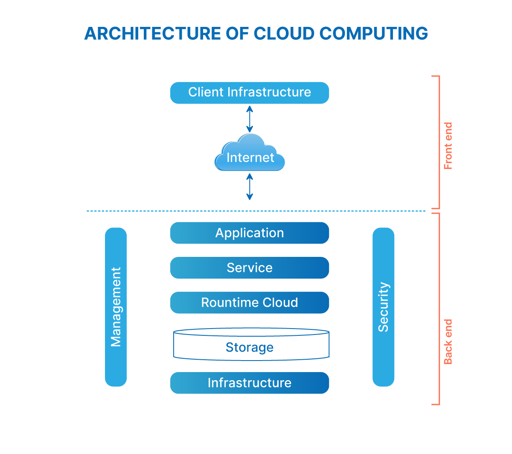
1️⃣ Client Infrastructure
Client infrastructure is just the device and app you use to access the cloud.
Your device + browser = client infrastructure
2️⃣ Applications (Cloud Apps)
Application is a tool used by users to do tasks (like typing, chatting, emailing).
Application means software that runs on the internet (cloud), not on your device
👉 Examples:
- Google Docs → write documents
- Gmail → send emails
- Zoom → attend meetings
When you open Google Docs in your browser → You are using a cloud application (no need to install anything)
☁️ Cloud Services (3 Types)
🖥️ 1. IaaS - Infrastructure as a Service
You manage the software; cloud manages the hardware.
✅ What it provides
- Virtual machines (VMs)
- Storage (disk)
- Networks (VPC)
- Load balancers
- Firewalls
⚙️ What YOU manage (as developer)
- OS
- Runtime
- Application code
- Security patches for OS
- Scaling your app
💡 Examples
- Google Compute Engine (GCE)
- AWS EC2
- Azure Virtual Machines
🏠 Simple analogy
Like renting an empty house - you place furniture, AC, kitchen, everything.
❓ When to use?
- When you need full control over environment
- Deploying custom applications
- Running databases or backend systems
🎯 2. PaaS - Platform as a Service
Cloud provides platform; you deploy your code.
✅ What it provides
- OS + Runtime managed by cloud
- Managed servers
- Managed databases
- Auto-scaling
- CI/CD deployment pipelines
⚙️ What YOU manage
- Only application code
💡 Examples
- Google App Engine
- Google Cloud Run
- AWS Elastic Beanstalk
- Heroku
🏠 Simple analogy
Like renting a fully furnished house - you only bring your clothes.
❓ When to use?
- Fast development without worrying about infrastructure
- Deploying web apps / APIs easily
- Startups / student projects / hackathons
📱 3. SaaS - Software as a Service
Ready-made full applications delivered through the internet.
✅ What it provides
- Complete software
- Hosting, security, updates
- No installation needed
⚙️ What YOU manage
- Only usage
- No coding required
💡 Examples
- Gmail
- Google Docs
- Salesforce
- Zoom
- Slack
🏠 Simple analogy
Like staying in a hotel → everything is ready; just use it.
❓ When to use?
- If you need a tool, not a development environment
- Email, CRM, collaboration tools
📋 In simple terms:
- IaaS - You manage most things
- PaaS - You manage only code
- SaaS - You manage nothing
🧠 Best way to remember
- IaaS = Infrastructure - servers in the cloud
- PaaS = Platform - deploy code, no servers
- SaaS = Software - ready-made apps
💡 Why This Matters in Cloud?
In cloud service models, knowing who manages what is important:
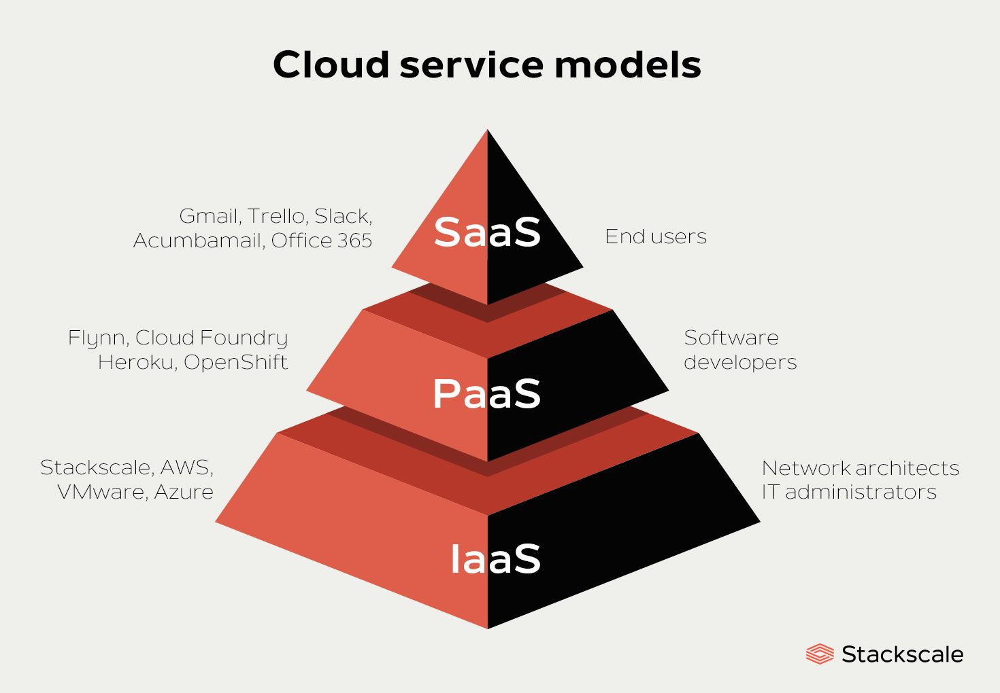
🔹 On IaaS
You manage:
- Application
- Data
- Runtime
- OS
🔹 On PaaS
You manage:
- Application
- Data
Cloud manages:
- Servers
- OS
- Runtime
🔹 On SaaS
You manage:
- Only your data (sometimes)
Cloud manages:
- Application
- Runtime
- Everything else
🏢 On-Premises vs Cloud
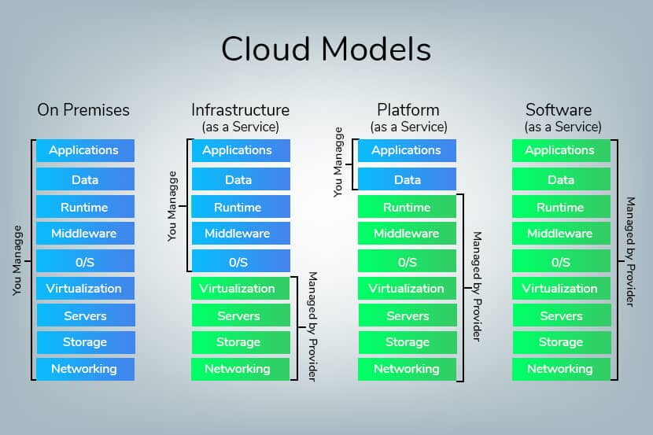
On-premises = all systems are stored and managed locally (not in cloud)
On-premises means you own and manage all servers and systems yourself
✔ You own ( Buy all Yourself ) :
- Servers 🖥️
- Storage 💾
- Network 🌐
🧩 Explanation of All Elements
1️⃣ Applications
👉 The actual software you use
It includes:
- Your frontend (UI)
- Your backend (APIs)
- Business logic (what your app does)
- All features and functionality
📌 Example: Gmail, WhatsApp, Google Docs
👉 Simple: What user interacts with
2️⃣ Data
👉 Information used by the application
Data = The information your application uses, stores, processes, or generates.
📌 Example: your emails, files, photos
👉 Simple: The content inside apps
3️⃣ Runtime
👉 Environment where your code runs
Example:
- If you write a Python app, the Python interpreter + required libraries = runtime.
- If you write a Java app, the JVM (Java Virtual Machine) = runtime.
📌 Example: Java, Python runtime
👉 Simple: Engine that runs your code
4️⃣ Middleware
👉 Software that connects different systems
📌 Example: database connectors, APIs
👉 Simple: Bridge between app and system
5️⃣ Operating System (OS)
👉 Basic system software
📌 Example: Linux, Windows
👉 Simple: Controls the computer
6️⃣ Virtualization
👉 Creating virtual machines (VMs)
📌 Example: running multiple systems on one server
👉 Simple: Divide one server into many virtual servers
7️⃣ Servers
👉 Physical machines that run everything
👉 Simple: Actual computers in data centers
8️⃣ Storage
👉 Where data is saved
👉 Simple: Hard disk of cloud
9️⃣ Networking
👉 Internet connection between systems
👉 Simple: Communication between servers and users
☁️ Types of Cloud Deployment
It tells where your data and applications are stored and who can use them
🌍 1. Public Cloud
✅ What it is
A public cloud is a cloud environment where resources (servers, storage, etc.) are owned and managed by third-party providers and shared among multiple users (tenants).
👉 Examples: Amazon Web Services, Microsoft Azure, Google Cloud
🧠 How it works
- Cloud provider owns huge data centers
- Resources are divided using virtualization
- Multiple companies use the same infrastructure securely
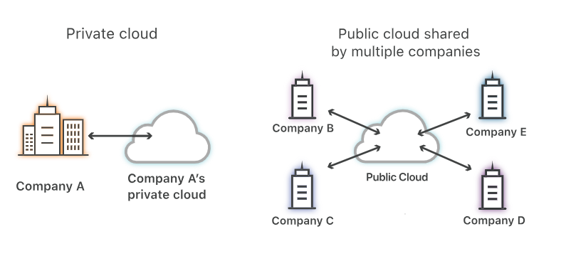
🔑 Key Characteristics
- Multi-tenant (shared infrastructure)
- Highly scalable (increase resources anytime)
- Pay-as-you-go
- Accessible via internet
👍 Advantages
- Very low cost (no hardware needed)
- Easy to start (just create account)
- High availability & reliability
👎 Disadvantages
- Less control over infrastructure
- Security concerns (shared environment)
- Internet dependency
📌 Real Example: If you deploy a web app on AWS → your app runs on shared servers used by thousands of others.
Simply: Cloud is shared and available to everyone. Anyone can use it via internet.
🏢 2. Private Cloud
✅ What it is
A private cloud is used by only one organization. The infrastructure is not shared with others.
👉 It can be:
- On-premises (inside company data center)
- Or hosted privately
🧠 How it works
- Company owns or rents dedicated servers
- Full control over hardware & software
- Internal teams manage security and infrastructure
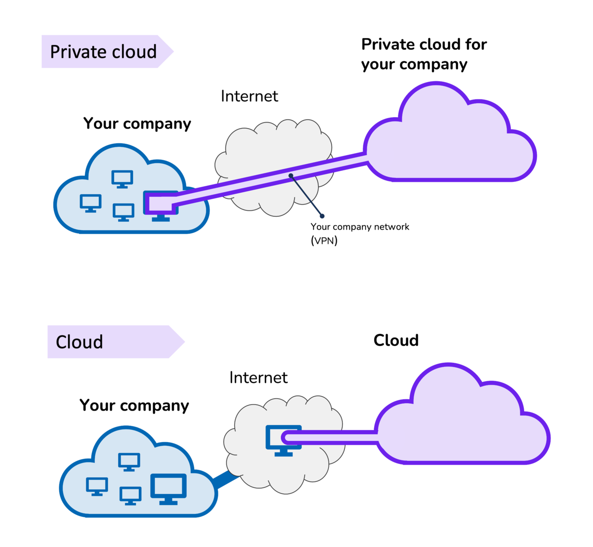
🔑 Key Characteristics
- Single-tenant (not shared)
- High security & control
- Customizable environment
👍 Advantages
- Maximum security & privacy
- Full control over configuration
- Ideal for sensitive data (banking, healthcare)
👎 Disadvantages
- Expensive (hardware + maintenance)
- Requires skilled team
- Limited scalability compared to public cloud
📌 Real Example: A bank storing customer financial data in its own data center.
Simply: Cloud is used by only one company. Only your organization can access it.
🔀 3. Hybrid Cloud
✅ What it is
A hybrid cloud is a combination of public + private cloud, connected together.
👉 Some data stays private, some runs in public cloud.
🧠 How it works
- Sensitive data → private cloud
- General workloads → public cloud
- Both communicate via secure connection
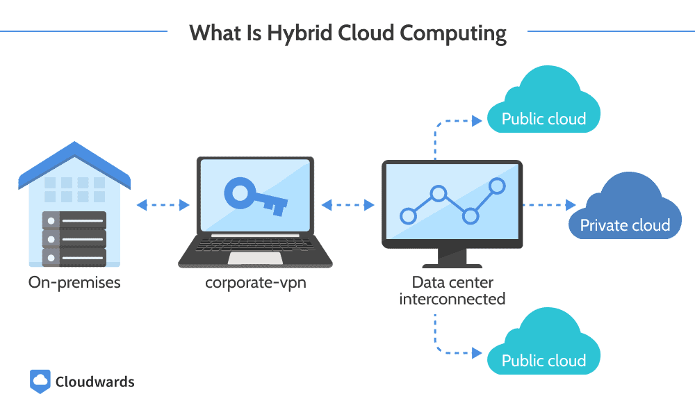
🔑 Key Characteristics
- Flexible architecture
- Combines benefits of both
- Supports cloud bursting (scale to public cloud when needed)
👍 Advantages
- Best balance of cost + security
- Highly flexible
- Good for scaling during high traffic
👎 Disadvantages
- Complex to manage
- Requires integration setup
- Security management is tricky
📌 Real Example: A company stores user data privately but runs website traffic on AWS during peak usage
Simply: Mix of public + private cloud. Some data private, some on public cloud.
⚖️ Quick Comparison
| Feature | Public Cloud ☁️ | Private Cloud 🏢 | Hybrid Cloud 🔀 |
|---|---|---|---|
| Ownership | Third-party | Organization | Both |
| Cost | Low | High | Medium |
| Security | Medium | High | High |
| Scalability | Very High | Limited | Very High |
| Control | Low | Full | Medium |
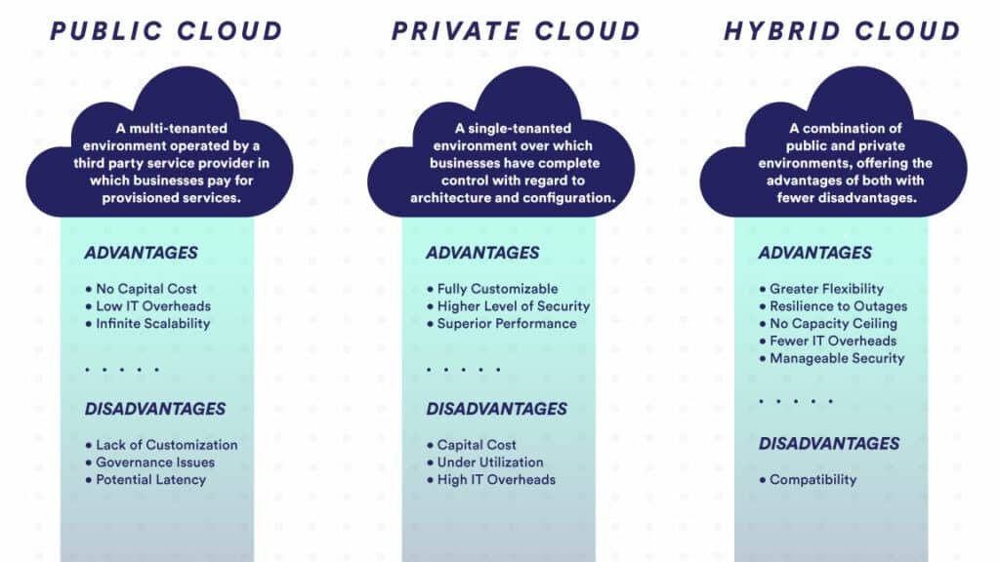
🧩 Summary
- 👉 Public Cloud: Shared, cheap, scalable
- 👉 Private Cloud: Secure, expensive, full control
- 👉 Hybrid Cloud: Combination of both for flexibility
💾 Types of Cloud Storage
Cloud storage is how data is stored and accessed in the cloud.
📦 1. Object Storage
✅ What it is
Data is stored as objects inside buckets.
Each object contains:
- Data (file)
- Metadata (info about file)
- Unique ID
👉 Example: Amazon S3
🧠 How it works
- No folders like traditional systems (flat structure)
- Access using HTTP APIs
- Each file has a unique URL
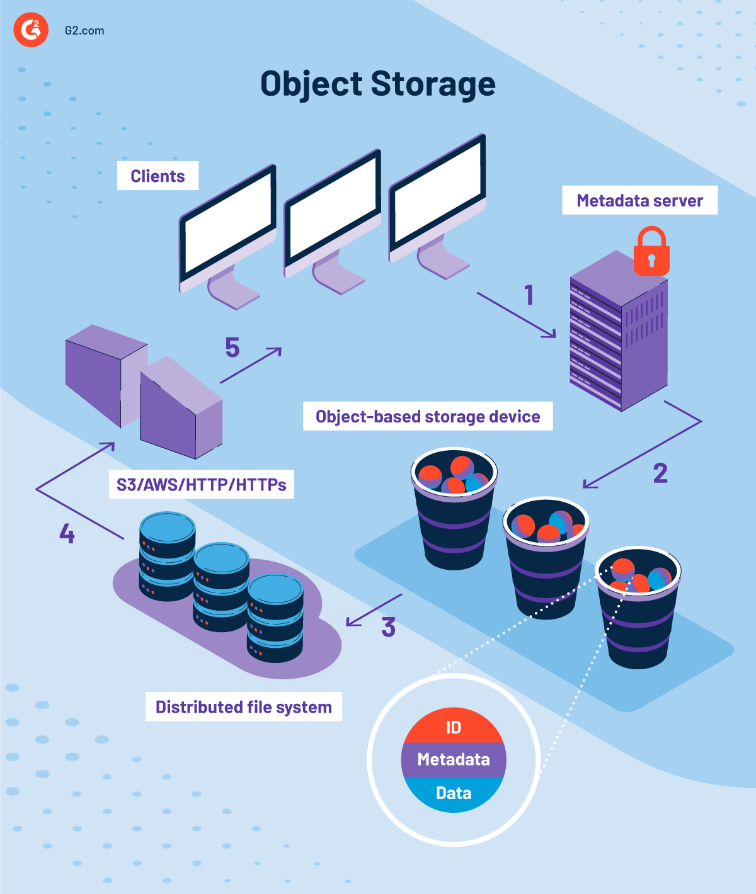
🔑 Features
Best for unstructured data
📌 Used for
- Images, videos, backups
- Logs, big data
- Static websites
👍 Advantages
- Cheap
- Highly scalable
- Easy to access globally
👎 Disadvantages
- Not suitable for databases
- Higher latency compared to block storage
💾 2. Block Storage
✅ What it is
Data is divided into small blocks and stored separately.
👉 Example: Amazon EBS
🧠 How it works
- Blocks act like a hard disk
- Attached to virtual machines (VMs)
- OS manages how data is stored
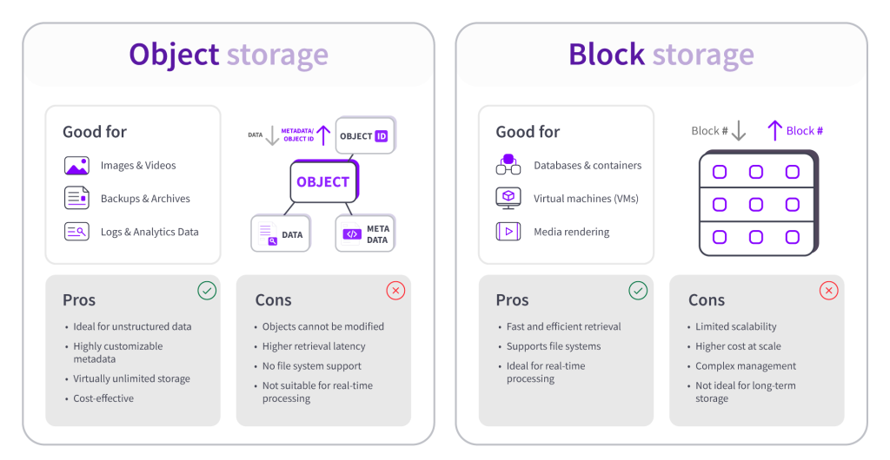
🔑 Features
- Very low latency
- High performance
- Structured storage
📌 Used for
- Databases (MySQL, PostgreSQL)
- Operating systems
- Transactional systems
👍 Advantages
- Fast performance
- Suitable for critical apps
- Fine control over data
👎 Disadvantages
- More expensive
- Limited scalability compared to object storage
📁 3. File Storage
✅ What it is
Data is stored as files in folders (like your computer).
👉 Example: Amazon EFS
🧠 How it works
- Uses file system (NFS/SMB)
- Multiple users can access same files
- Hierarchical structure (folders → subfolders → files)
🔑 Features
- Shared access
- Easy to use
- Familiar structure
📌 Used
- Shared drives
- Content management systems
- Team collaboration
👍 Advantages
- Supports multiple users
- Good for shared data
👎 Disadvantages
- Slower than block storage
- Limited scalability compared to object storage
⚖️ Quick Comparison
| Feature | Object Storage 📦 | Block Storage 💾 | File Storage 📁 |
|---|---|---|---|
| Structure | Objects (flat) | Blocks | Files/Folders |
| Performance | Medium | High | Medium |
| Scalability | Very High | Medium | Medium |
| Best For | Media, backups | Databases | Shared files |
| Example | S3 | EBS | EFS |

💻 What is a Virtual Machine (VM)?
A Virtual Machine (VM) is a software-based computer that runs like a real computer — with its own:
- CPU
- Memory (RAM)
- Storage
- Operating System (Windows/Linux)
👉 But instead of being physical, it runs inside another real machine.
🧠 Easy Analogy
👉 Think of your laptop 🧑💻
- Normally → 1 OS (Windows)
- With VM → You can run:
- Windows
- Linux
- Another OS
👉 All on the same physical system
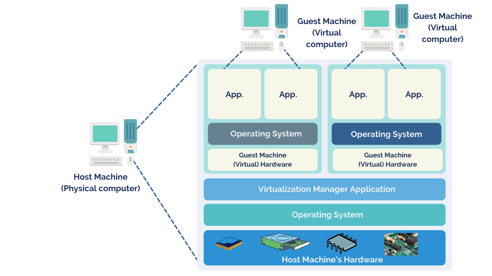
⚙️ How VM Works (Core Idea)
At the heart of VMs is something called a Hypervisor.
🔹 Hypervisor
A hypervisor is software that:
- Creates and manages VMs
- Divides physical resources (CPU, RAM, storage)
- Allocates them to different VMs
👉 Examples: VMware, VirtualBox
One physical server → split into many virtual machines using a hypervisor
Each VM works independently
🔁 Flow
- Physical Server (Host Machine)
- Hypervisor installed
- Multiple VMs created
- Each VM runs its own OS independently
🔑 Benefits
- Resource Efficiency – One server → many VMs
- Isolation – If one VM crashes → others unaffected
- Scalability – Create/destroy VMs anytime
- Flexibility – Run different OS on same machine
📌 Real-Life Example
👉 Suppose you deploy a backend app:
- You launch an EC2 instance (VM) on AWS
- Install Linux
- Run your app
👉 That VM behaves like a real server, but it's virtual
⚖️ VM vs Physical Machine
| Feature | Virtual Machine 💻 | Physical Machine 🖥️ |
|---|---|---|
| Setup | Fast | Slow |
| Cost | Low | High |
| Scalability | Easy | Hard |
| Isolation | Yes | No |
🧩 Summary
👉 A Virtual Machine is a software-based computer that runs an OS and applications using virtualized hardware managed by a hypervisor.
📦 What are Containers?
A container is a lightweight package that includes:
- Application code
- Dependencies (libraries, runtime)
- Configurations
👉 It runs consistently anywhere (your laptop, server, cloud).
Container = a lightweight box that has your app + everything it needs to run
👉 No need to install anything separately
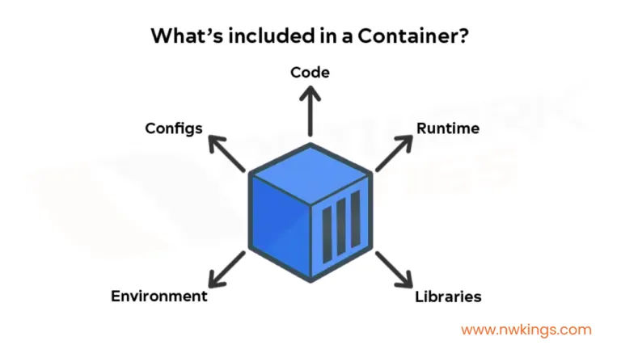
🧠 Easy Analogy
👉 Think of a shipping container 🚢
- Same container → can run on truck, ship, train
- Inside content doesn't change
👉 Same way: Your app runs same everywhere using containers
📌 Real-World Example
👉 Suppose you built a Node.js app
Without container:
- Works on your laptop ✅
- Fails on server (missing setup) ❌
With container:
- Pack app + dependencies
- Run anywhere ✅
⚙️ How Containers Work
Unlike VMs:
- Containers don't have their own OS
- They share the host OS kernel
🔑 Key Characteristics
- Lightweight (very small size)
- Fast startup (seconds)
- Portable (runs anywhere)
- Isolated (apps don't interfere)
🐳 What is Docker?
👉 Docker is a tool used to create, run, and manage containers
🧠 One line:
Docker = software that runs containers
How it works
- 👉 You create a container using Docker
- 👉 Run it anywhere:
- Laptop
- Server
- Cloud
👉 It works same everywhere ✅
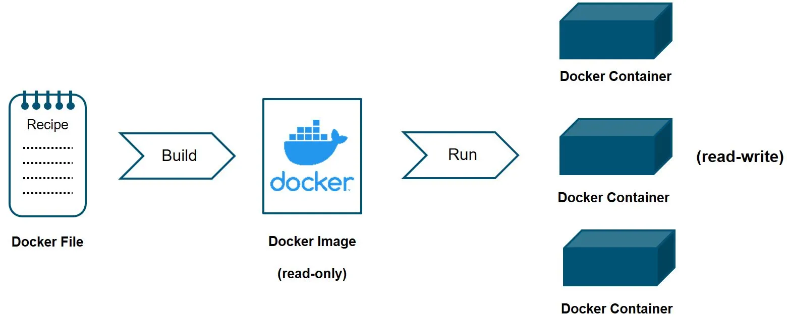
🏠 Simple Analogy
- 👉 Container = food box 🍱 (everything packed inside)
- 👉 Docker = delivery system 🚚 (moves & runs it)
🚀 Why Containers are Important
- Microservices Architecture – Each service runs in its own container
- Dev = Prod consistency – No "it works on my machine" problem
- Scalability – Easily create multiple containers
- CI/CD friendly – Fast deployments
⚖️ Containers vs Virtual Machines
| Feature | Containers 📦 | Virtual Machines 💻 |
|---|---|---|
| OS | Shared | Separate OS |
| Size | Small | Large |
| Startup Time | Seconds | Minutes |
| Performance | Faster | Slower |
| Isolation | Medium | Strong |
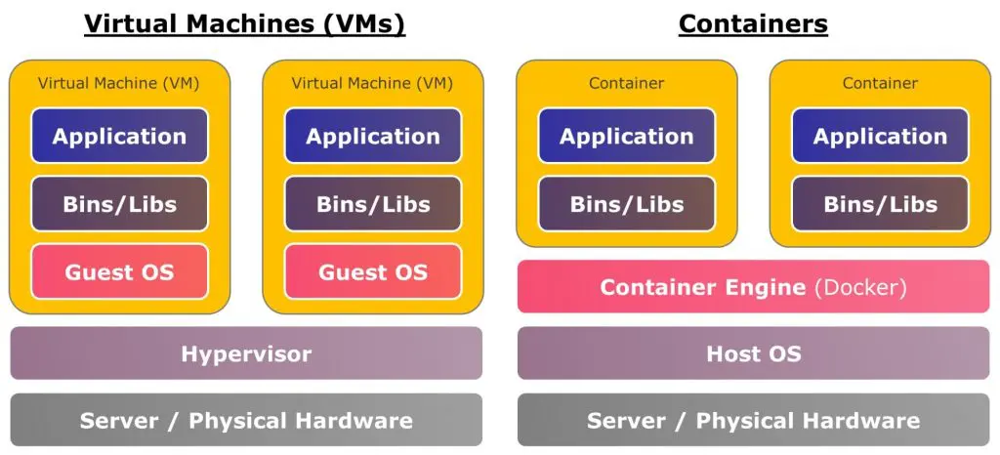
🧠 Simple Understanding
- VM = Full computer inside computer
- Container = Just app + dependencies
🧩 Summary
- 👉 Container = packaged app
- 👉 Docker = tool to run containers
☸️ What is Kubernetes?
Problem:
When you have many containers, managing them manually is difficult ❌
Solution:
Use Kubernetes
Kubernetes (often called K8s) is a system used to manage, deploy, and scale containers automatically.
- 👉 It is an orchestration tool for containers.
- 👉 Originally developed by Google
🧠 Easy Analogy
👉 Think of Kubernetes like a manager of workers 👨💼
- Containers = workers
- Kubernetes = manager
Manager responsibilities:
- Assign tasks
- Replace workers if they fail
- Increase workers when demand increases
⚙️ What Problem Kubernetes Solves
If you have:
- 10 containers → manageable manually
- 100+ containers → ❌ very hard
👉 Kubernetes handles:
- Deployment
- Scaling
- Networking
- Failures
🧩 Core Concepts in Kubernetes
📦 1. Pod
- Smallest unit in Kubernetes
- Contains one or more containers
- 👉 You don't run containers directly, you run Pods
🖥️ 2. Node
A machine (VM or physical) that runs Pods
🌐 3. Cluster
Group of nodes managed by Kubernetes
🎯 4. Deployment
- Defines how many Pods to run
- Handles updates & scaling
🔗 5. Service
- Exposes Pods to users
- Provides stable network access
🔁 How Kubernetes Works (Flow)
- You define your app (YAML file)
- Kubernetes creates Pods
- Schedules them on Nodes
- Monitors health
- Auto-heals & scales
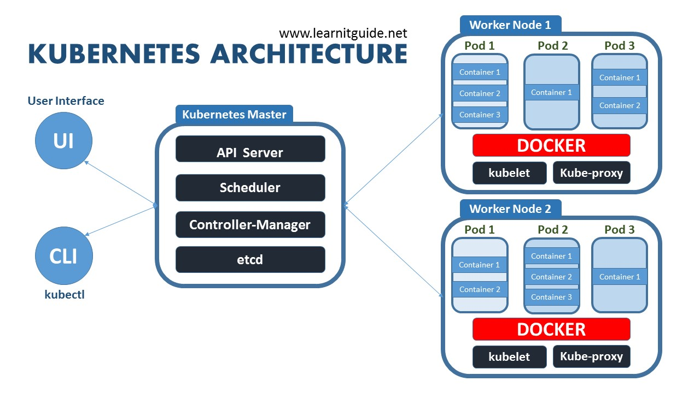
🔑 Key Features
1. Auto Scaling 📈
- 👉 Increases or decreases containers based on traffic
- 👉 Example: More users → more containers automatically
2. Load Balancing ⚖️
- 👉 Distributes traffic evenly
- 👉 Example: 100 users → shared across many containers
3. Self-Healing 🔁
- 👉 If a container crashes → Kubernetes restarts it
- 👉 Example: App fails → automatically fixed
4. Rolling Updates
Update app without downtime
5. Service Discovery
Containers can find each other easily
⚖️ Kubernetes vs Docker
| Feature | Docker 🐳 | Kubernetes ☸️ |
|---|---|---|
| Purpose | Run containers | Manage containers |
| Scope | Single machine | Multiple machines |
| Scaling | Manual | Automatic |
🧠 Simple Understanding
- Docker → creates containers
- Kubernetes → manages containers at scale
🧩 Summary
👉 Kubernetes is a container orchestration platform that automates deployment, scaling, and management of containerized applications.
🔐 Cloud Security: IAM Roles (Identity & Access Management)
Cloud security = protecting your data and applications in the cloud
✅ What is IAM?
IAM (Identity and Access Management) is a cloud security system that controls:
- 👉 Who can access what resources and what actions they can perform
- 👉 Used in platforms like Amazon Web Services, Microsoft Azure, Google Cloud
✅ What is an IAM Role?
An IAM Role is a secure way to grant temporary permissions to users or services without using long-term credentials.
📌 Real-Life Example
👉 Suppose you have an app running on a VM:
- VM needs access to storage (S3)
❌ Bad approach:
Hardcode access keys
✅ Good approach:
Attach IAM Role to VM
👉 VM automatically gets secure access
🔐 Why IAM Roles are Important
🔑 1. No Hardcoded Credentials
More secure
🔑 2. Temporary Access
Credentials expire automatically
🔑 3. Least Privilege Principle
Give only required permissions
🌍 Regions & Availability Zones
🌍 What is a Region?
✅ Definition
A Region is a geographical area where cloud data centers are located.
👉 Example Regions in Amazon Web Services:
- Mumbai (ap-south-1) 🇮🇳
- US East (N. Virginia) 🇺🇸
- Europe (Ireland) 🇮🇪
🧠 Simple Understanding
👉 Region = City / Location
Each region:
- Is physically separate
- Has multiple data centers
- Operates independently
🏢 What is an Availability Zone (AZ)?
✅ Definition
An Availability Zone (AZ) is a separate data center (or group of data centers) within a region.
👉 Each region has multiple AZs
🧠 Simple Understanding
👉 Region = City
👉 AZ = Buildings inside the city
Each building (AZ) is:
- Independent
- Has power, network, cooling
🔁 Relationship
👉 1 Region = Multiple Availability Zones
Example:
Mumbai Region → AZ1, AZ2, AZ3
🚀 Why Availability Zones are Important
🔑 1. High Availability
If one AZ fails → others still work
🔑 2. Fault Isolation
Failures don't spread
🔑 3. Load Distribution
Traffic spread across AZs
📌 Real-Life Example
👉 Suppose you build a web app:
Deploy:
- App server in AZ1
- Another in AZ2
👉 If AZ1 crashes:
AZ2 still serves users ✅
⚖️ Quick Comparison
| Feature | Region 🌍 | Availability Zone 🏢 |
|---|---|---|
| Scope | Large (country/area) | Smaller (data center) |
| Isolation | Very high | High |
| Distance | Far apart | Nearby |
| Purpose | Global distribution | High availability |
🧠 Easy Way to Remember
- 👉 Region = Location (like city)
- 👉 AZ = Data center inside that location
🔥 Interview Tip
Always say:
- "Deploy across multiple AZs for high availability"
- "Use multiple regions for disaster recovery"